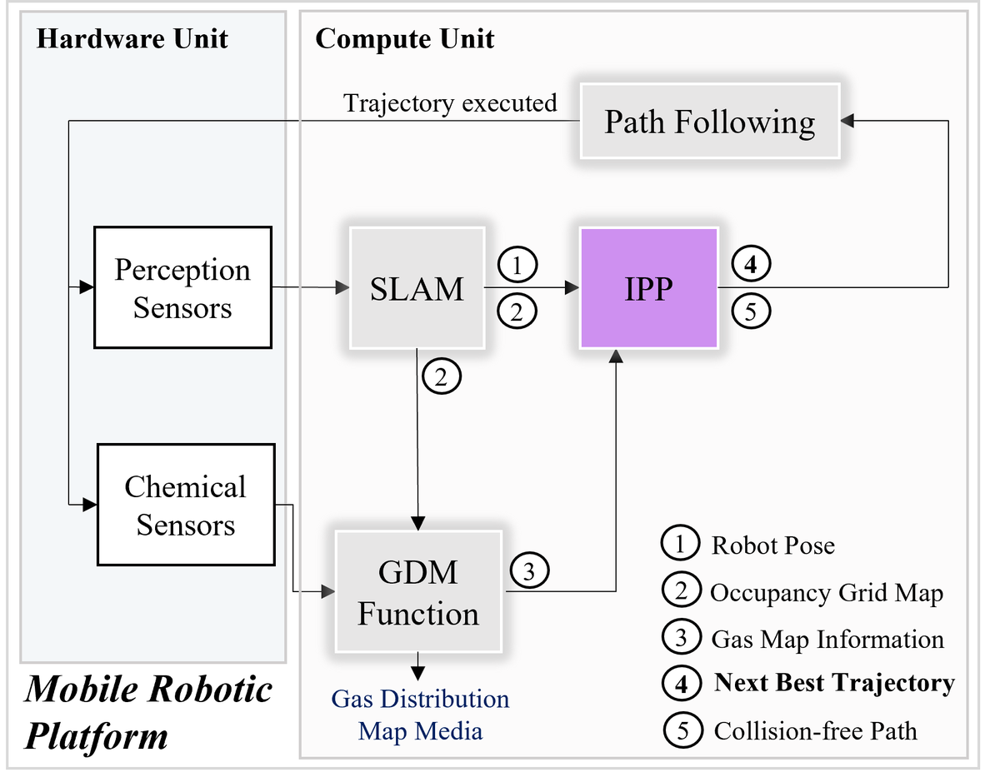
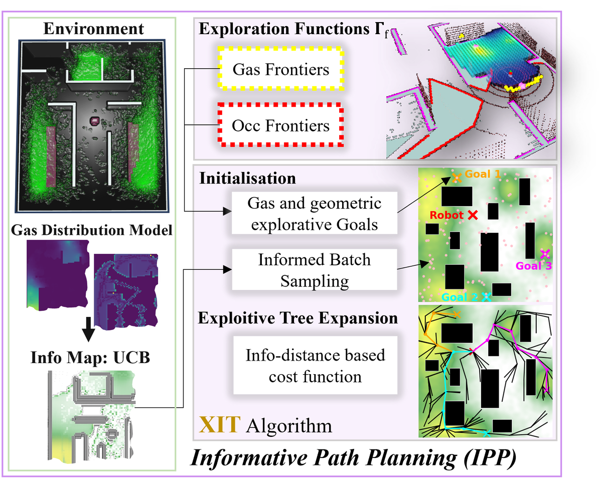

Abstract
Mobile robotic gas distribution mapping (GDM) provides critical situational awareness during emergency responses to hazardous gas releases. However, most systems still rely on teleoperation, limiting scalability and response speed. Autonomous active GDM is challenging in unknown and cluttered environments, because the robot must simultaneously explore traversable space, map the environment, and infer the gas distribution belief from sparse chemical measurements. We address this by formulating active GDM as a next-best-trajectory informative path planning (IPP) problem and develop XIT (Exploration and Exploitation Informed Trees), a sampling-based planner that grows a single shared tree toward multiple frontier goals, coupling exploration of unresolved regions with informative gas sampling en route. XIT draws a batch of samples from an Upper Confidence Bound (UCB) information field derived from the current gas posterior and expands the tree using a cost that trades off travel effort against information acquisition. To enable plume-aware exploration, we introduce the gas frontier concept, defined as unobserved regions adjacent to high gas concentrations, and propose the Wavefront Gas Frontier Detection (WGFD) algorithm for their identification. High-fidelity simulations demonstrate the benefits of XIT in terms of GDM quality and efficiency, and a scaled real-world experiment demonstrates its practicality. Although developed for active GDM, XIT is applicable to other robotic information-gathering tasks in unknown environments that face the exploration and exploitation trade-off.
Video
Real-world trial in a 5.0 m × 3.7 m scaled indoor gas-leak arena with two CO2 sources and fan-driven airflow. A TurtleBot3 with a CO2 sensor runs XIT-GFF with the UCB cost in closed loop, from occupancy exploration through gas-frontier probing to a final gas-exploitative trajectory. Submitted with the paper as supplementary material.
Overview


Contributions
- XIT, a sampling-based IPP planner that constructs multi-goal informed trees over a UCB-based information field to trade off information acquisition and travel cost, with graph optimality on fixed sample-induced graphs and probabilistic completeness and asymptotic optimality established under the stated assumptions.
- To our knowledge, the first active GDM system that jointly reasons about environmental exploration, gas structure exploration, and gas exploitation, evaluated in high-fidelity simulation and demonstrated in a scaled real-world gas-release experiment.
- Gas frontier, a novel concept for detecting plume boundaries to support plume-aware exploration, and the Wavefront Gas Frontier Detection (WGFD) algorithm for their identification.
BibTeX
@article{Fazliu2026XIT,
title = {{XIT}: Exploration and Exploitation Informed Trees for Active Gas
Distribution Mapping in Unknown Environments},
author = {Fazliu, Mal and Coombes, Matthew and Wang, Sen and Liu, Cunjia},
journal = {IEEE Transactions on Robotics},
year = {2026},
note = {Accepted for publication. Preprint: arXiv:2602.13739}
}